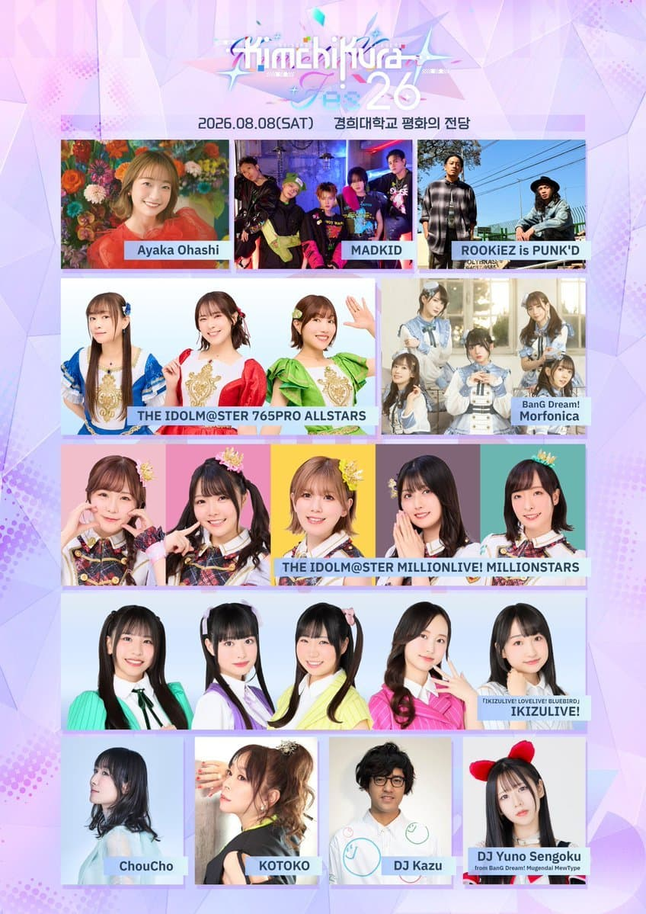

KIMCHIKURA Fes '26
모르포니카 & 센고쿠 유노
내한 확정!
김치쿠라란?
About KIMCHIKURA
김치쿠라
2016년부터 운영해온 한국의 애니송 DJ 클럽 이벤트입니다. DJ가 직접 애니송·J-POP을 믹싱하며 팬들과 함께 즐기는 파티형 행사로, 2018년에는 한국 최초로 일본 성우 내한 이벤트를 개최하며 차별성을 확립했습니다.
김치쿠라 페스
김치쿠라가 주최하는 아티스트 라이브 중심 대형 페스티벌입니다. Vol.1은 DJ 공연 위주였으나 Vol.2부터 라이브 병행, Vol.3부터는 일본 애니송 아티스트 초청 중심으로 전환되었고, Vol.4는 DJ 없이 아티스트만으로 구성된 단독 콘서트 페스티벌로 진행되었습니다. 2026년 Vol.5는 역대 최대 규모인 경희대학교 평화의전당(4,250석)에서 개최됩니다.
